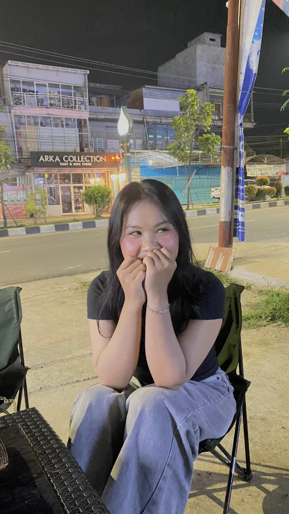

Maafin abangg ya?



Abangg tau kata maaf aja gak cukup buat hapus rasa kecewa di hati kamu. Abangg sadar sikapp abangg sudah menyakiti kamu, dan itu adalah terakhir yang ingin abangg lakuin di dunia ini. Kamu adalah bagian terindah dalam hidup abangg, dan entah gimana abangg kalau kamu pergi. Abangg berjanji akan belajar menjadi lebih baik lagi untuk kamu, untuk kita.